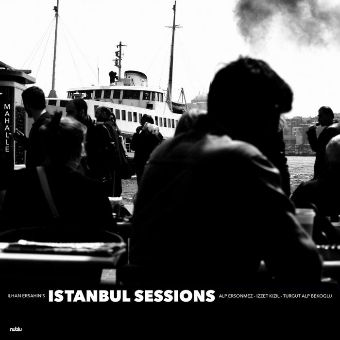

Last Autumn Bandcamp launched Clubs:
[Clubs are a] subscribe-to-own music discovery experience, curated by trusted experts and rooted in community. Inspired by old-school record clubs and online spaces where passionate fans come together to share and explore music, bringing together human curation with community connection.
They started with a handful of clubs, and I joined Jazz-ish Jazz, curated and hosted by the absolutely delightful DJ, broadcaster, and music journalist Tina Edwards. For the price of an album each month, I get a record hand picked by Tina, a listening party (with Tina and usually the artist/s or re-issuer), a written interview, and a community page of sorts where members can leave comments.
General praise for Bandcamp
These club albums are treated in exactly the same way as a normal purchase on Bandcamp. A “normal way” that will surprise many in the Spotify age, especially young millenials down.
You get to download the music. You own it. No DRM, no time or download limits, no ads. You can also stream it if you like. Oh, and the artist receives something like 75% or more of the sales revenue.
That’s awesome. If you care about the artist you are buying from, and can afford it, I don’t know why you wouldn’t use Bandcamp over Spotify or Apple Music. It is clearly the more ethical choice at the time I write this, especially as they have just banned AI-generated music in a bid to keep the platform a celebration of human artistry and connection. As someone who has been using the service for nearly 15 years, all I can say is, fuck yeah.
Why jazz
Anyway. I joined the jazz club to broaden my horizons in a genre that’s always tantalised me, but which I’ve only ever flirted. There’s an enormous amount of variety within jazz, so for a record club it seemed like the perfect choice.
Reflections on the first six months
It’s been fantastic. A truly wonderful mixture of records. I’ll give each a mini-review below, but first want to talk about the listening parties.
Listening parties
I didn’t expect to enjoy them so much. It’s nice to see some of the same names each month, hang out with Tina and the artists, and generally be a bit silly. But every month is also a profound opportunity. These are incredible musicians… and they’re just there. Answering our questions. Enjoying the feedback. It’s so human, and not an opportunity you often get, let alone every month.
It can be touching, too. Recently I was away from home for a funeral, with extended family, and it was of course quite a sad and discombobulating few days. I’m autistic, so identifying my feelings and expressing them around something like a funeral can be challenging, to say the least. The evening before the funeral I went upstairs to the little guest room, put my headphones on, logged into the listening party, and had the most incredible experience across the 45 minutes.
The emotional fullness turned my body into what felt like an electrified pool of jelly, partly because of the incredible music, and partly because of how I was experiencing it, the commensality. The artists were in a great mood, joking around and sharing their process, saying how much they appreciated our comments. Gratitude was flowing back and forth. It was beautiful, the intensity was almost frightening, and I knew it was a special experience even as it happened.
Obviously they’re not always like that. They have all been fun though, and the focus it brings to your listening, the way people point out stuff you didn’t - or that you did! - consider or enjoy or find curiosity in, well, it’s just wonderful.
Album mini-reviews
In chronological order of receipt.

Orbits, by The Circling Sun (2025)
This is exactly the kind of album that I wouldn’t pick up of my own accord. It has a 70s vibe, despite being contemporary, and prominently features the cuíca (a Brazilian friction drum that sounds like a monkey), which I love. In some ways it’s a utopian album, full of samba charm. The opening track Constellation includes a choir singing, “Freedoooom, freedoooom!” over warm brass and synths. For me, it evokes the optimism of a late spring train journey from Inverness to Kyle of Lochalsh, sparkling still water passing by the window. Good times ahead.
Favourite track: Flying. I can imagine the USA-1950s-retro-futurism-feminist music video for this in my mind’s eye. It takes place in a shopping mall and involves a baseball bat.

The Prophet and The Madman, by Ami Taf Ra (2025)
Another that I wouldn’t have picked myself. It’s hard to describe! In her debut album Ami draws on her Arab North African roots, fusion jazz, and as the title suggests, lyrically and thematically from author Khalil Gibran. She sings mostly in English, but also classical Arabic, and the Moroccan dialect on Gnawa, which is a catchy, strutting-on-tiptoes affair during verses, sliding into almost-woozy group sung (chanted?) choruses. The following track, Gibran, is a haunting piano-led affair, mysterious, transporting you directly into a dark, comfortable, hazy jazz club. The solos on this album are all masterful and build the tracks up.
It’s a heady record, a lot to take in.
Favourite track: Love (feat. Ryan Porter). Almost sickly sweet, but it sends shivers down my legs every time. One to slow dance with your sweetheart:
Desire love to be like a running brook that sings to the night
To know the pain of too much tenderness
To be wounded by your own understanding
Willingly to bleed joyfully
To wake at dawn with a winged heart
To give thanks to another day of love
To return home with gratitude
To sleep with a prayer for your beloved
In your heart, a song of praise
To rest upon your lips
Speak to us of love
I’m not crying you’re crying

Jazz Report from the Hood, by Omasta (2025)
An album from a Krakow outfit, whose band name means “fat added to food for flavour”. And I just love that, because as the holder of an MSc Gastronomy degree, it perfectly encapsulates the oily-thick feel of this hip-hop inspired jazz report. All the instruments were vintage, and the mixing and mastering was done on analogue equipment, so the sound is warm and deep as home made roasted chicken broth. The record is intended to be listened to as a whole piece, and it works. To me it’s reminiscent of a particularly long and slightly scary Friday evening out drinking in my early 20s. It has confidence, cool, curiosity, danger, maybe some scraps and scrapes, before a slightly hyper return home as the sun comes up.
Special shout out to Antoni (soprano sax, flute), who had pneumonia while recording the album. Blimey.
Favourite track: Kazimierz. The closing track is just absolute cool sunglasses-wearing alternative hip-hop personified. The trumpet hook is exactly that, we get energetic solo after energetic solo, and the drum kit throughout is so tightly yet expressively played, staying centre throughout. The beat skip 35 seconds before the end of the track is KILLER!

Sanctuary, by Levitation Orchestra (2025)
This is a band to watch. They’re from London, and do everything collaboratively. This is the album that drew such a strong emotional reaction out of me during the listening party. At times intensely warm and comforting, like a chocolatey dark roast cortado, elsewhere as electrifying and heady as the best jRPG soundtracks. All delivered with exceptionally tight playing and a cohesive feel throughout, despite slow burners being mixed in with livelier tracks.
For a while, I was telling all my friends to listen to Embrace, because it has some of the most incredible voice work (by the eponymous Plumm), almost reminiscent of Rajasthani folk music. It’s so good. Then on the next track, Breathe It In, the piano absolutely dominates. It sounds like Spirited Away meets Zelda: Breath of the Wild, with just a dash of the saxophone from that final Zelda: Tears of the Kingdom trailer. I’d say, restrained drama, resolve in the face of darkness. Following that, Home is like a guided meditation, as a male voice begins by speaking, “You know me / Within and without / In your embrace / I am safe to be”. Later, Premedetatio Malorum sounds like it was made by three goblins wearing shades and a trenchcoat, which went down well in the listening party: One band member said “Definitely goblin energy in the room when we came up with this one”, and another, “Where were you when we were naming these!?”.
Favourite track: Another Way. The closing track, which comes in at 9 minutes, has the best sax harmony I’ve ever heard, and the track is… scary. But in a good way. It illicts a strange fear in me, a fear that, somehow, I can grin back at.

Denga, by Robin Jones Quintet (1971)
A reissue (2022), this early 70s banger is best described on the Bandcamp page: “a scintillating fusion of Afro-Cuban and Afro-Brazillian rhythms laden with heavy Fender Rhodes sounds and no less than three Afro-Latin Percussionists”. Somehow, the record still sounds fresh. The mix is absolutely superb, with all the percussionists spaced out such that you can hear them distinctively doing their thing. And what a thing they do. It makes you want to move. I joked in the listening party that El Sueno is a Latin James Bond theme, but I really do think there’s something to it! Wouldn’t be out of place in Series 2 of The Night Manager. Overall, this is probably the most crowd pleasing album of the club, as I really can’t imagine someone taking a dislike to it, and several of the tracks are an absolute blast. Robin’s albums are hard to find, but luckily the reissuer has another, EL MAJA, also up on Bandcamp.
Favourite track: Goodbye Batucada. This one would pair really well with Flying, from Orbits. It has an incredibly upbeat, almost glassy-smiled edge to it. That 1950s retro-futurist shopping mallvibe is there again, in a good way, if such a thing is imaginable.

Istanbull Sessions: Mahalle, by Ilhan Ersahin (2026)
I’ve only had a few days with this one, but wow. This album is a celebration of Istanbul’s diverse neighbourhoods, and is described as cinematic, which is certainly is. The record is quite rocky, and grungey, with powerful, almost forceful drumming at times, such as on the opener Yedi Tepe. I’m struck by Ersahin’s sax playing, which can be pretty wild, and has some absolutely delightful Turkish-sounding solos (like on Asmalı) that almost twist the ear into hearing a bass clarinet or such. And yet, the restraint shown on Galata, the soft playing, the dedication to the riff, it’s delightful, as is the entire song, which has an 80s flavour that arrived to me through early home video games (is that guy hitting a barrel in the background??), somehow suddenly dropping into fully Nirvana-esque grunge at various points. Absolutely brilliant.
Favourite track: Galata. I just love that riff. The whole track sounds the way a vintage game cover looked, think Battletoads, Streets of Rage, night time, sunglasses